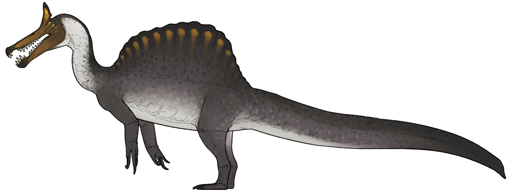

About Dinosaurs
For an incomprehensible 165 million years, the Earth was a vast, unbroken kingdom of dinosaurs, and the reality of their existence was far stranger and more spectacular than most people realize. The Mesozoic Era wasn't just a bleak landscape of gray rocks and fighting monsters; it was a vibrant, breathing ecosystem teeming with life. You had the sauropods, like the colossal Argentinosaurus, which were essentially walking skyscrapers that stripped entire canopies of leaves just to fuel their massive bodies. But then you had the other end of the spectrum—nimble, pack-hunting theropods with hollow bones and bodies covered in complex, iridescent plumage, looking more like giant, lethal birds of prey than overgrown lizards. They evolved bizarre crests for communication, thick armor plates for defense, and sickle-shaped claws for hunting, dominating every ecological niche from the sweltering supercontinents to the ancient polar forests where it actually snowed.
Their reign was violently interrupted about 66 million years ago when a city-sized asteroid slammed into what is now the Yucatan Peninsula, triggering a cataclysm of tsunamis, wildfires, and a suffocating global winter that wiped out roughly 75 percent of all life on Earth. The sheer scale of the devastation abruptly ended the era of the giant non-avian dinosaurs, collapsing food chains from the top down as the skies darkened and vegetation died off. Yet, the true plot twist of paleontology is that they didn't completely vanish. A specific lineage of small, feathered, warm-blooded theropods managed to survive the apocalyptic fallout by sheltering, scavenging, and adapting to the harsh new world. Millions of years of evolution sculpted those hardy survivors into the birds we see today. So, in a very real sense, the age of the dinosaurs never truly ended; they just traded their massive teeth and heavy tails for beaks and wings, continuing to live right outside our windows.
Feature 1 and 2
Interactive timeline and advanced explorer
Jurassic
Towering plant-eaters and iconic plated herbivores shaped the Jurassic spotlight.
Feature 3
Dinosaur comparison tool
Feature 4
Quiz game
Feature 5
3D model viewer
Loading 3D viewer
Feature 6 and 10
Theme switcher and live statistics
Era distribution
Diet distribution
Feature 7 and 9
Favorites and export
Feature 8 and API auth
Comments, ratings, and sign in
Loading reviews
Original content preserved
Different types of dinosaurs

Theropods
When you think of a scary, meat-eating dinosaur, you are thinking of a theropod. This group includes famous predators like the Tyrannosaurus rex and the Velociraptor. They walked on two legs, had hollow bones (much like modern birds), and featured jaws packed with sharp, serrated teeth designed to tear through flesh. Interestingly, this is also the group that was most heavily feathered; many smaller theropods looked a lot more like aggressive, toothed birds than the scaly lizards we usually imagine. They were fast, incredibly smart, and eventually evolved into the birds that fly around today.
For more information visit this page
Sauropods
These were the gentle giants of the ancient world and the largest land animals to ever exist. Dinosaurs like the Brachiosaurus and Diplodocus are famous for their impossibly long necks, long whip-like tails, and thick, pillar-like legs. Their bodies were essentially giant fermentation tanks designed to digest massive amounts of tough plant matter. Because they were so heavy, they had to walk on all fours. A fully grown sauropod was so big that it had almost no natural predators—a predator would have to be crazy to try and take down an animal the size of a four-story building.
For more information visit this page
Ceratopsians
If the dinosaur world had rhinoceroses, the ceratopsians would be it. Triceratops is the poster child for this group. They were four-legged herbivores characterized by the massive bony frills on the back of their heads and impressive facial horns. Those heavy, armored skulls weren't just for defending against hungry T-rexes; they were also likely used to show off to mates or wrestle with rivals, much like modern deer use their antlers. They also had incredibly strong, parrot-like beaks designed to snap off tough branches and vegetation.
For more information visit this page
Stegosaurs
Stegosaurs are instantly recognizable thanks to the double row of large, kite-shaped bony plates running down their backs and the menacing spikes at the end of their tails (hilariously named the "thagomizer" by scientists). Stegosaurus is the most famous example. Despite looking incredibly tough, they had incredibly tiny heads and brains roughly the size of a walnut. Paleontologists still debate what the plates were for—some think they acted like solar panels to help warm up their blood, while others believe they were brightly colored to intimidate predators or attract mates.
For more information visit this page
Ankylosaurs
These were the ultimate biological tanks. Ankylosaurs were wide, squat, four-legged herbivores that were almost entirely covered in thick, bony armor plates (called osteoderms) fused directly to their skin. Some even had armored eyelids! The most famous, like the Ankylosaurus, carried a massive, bony club at the end of their tail. If a predator got too close, an ankylosaur could swing that tail club with enough force to shatter the leg bones of even the largest carnivorous dinosaurs.
For more information visit this page
Ornithopods
Often referred to as the "cows of the Cretaceous," ornithopods like Parasaurolophus and Edmontosaurus were incredibly successful herbivores that roamed in massive herds. They are famous for their "duck-billed" snouts, which were packed with hundreds of tightly arranged teeth perfectly designed for grinding up tough plants. What makes them truly fascinating, though, is their communication. Many of them had elaborate, hollow bony crests on top of their heads that connected to their nasal passages. When they breathed out, these crests acted like biological trombones, allowing them to honk and trumpet loudly across the prehistoric plains.
For more information visit this page
Pterosaurs
These were the undisputed masters of the Mesozoic skies, and they were the first vertebrates on Earth to evolve powered flight (long before bats or birds figured it out). They weren't dinosaurs, but flying reptiles. While some, like the famous Pteranodon, were roughly the size of an eagle or an albatross, others pushed the absolute limits of biology. The Quetzalcoatlus, for example, was one of the largest flying animals of all time. Picture a creature with the wingspan of a small fighter jet, standing as tall as a modern-day giraffe when it was walking on the ground, scooping up small dinosaurs like we would eat popcorn.
For more information visit this page
Marine Reptiles
While the dinosaurs controlled the continents, a completely different cast of nightmares ruled the oceans. You had the Ichthyosaurs, which looked and swam remarkably like modern-day dolphins, but were entirely reptilian and possessed some of the largest eyes in the animal kingdom to hunt in the dark depths. Then there were the Plesiosaurs, which looked exactly like the mythical Loch Ness Monster, using four massive flippers to glide through the water while their impossibly long necks darted around to catch fish. Finally, toward the end of the dinosaur age, the Mosasaurs took over. These were essentially massive, aquatic monitor lizards—some reaching 50 feet long—with jaws like crocodiles. They were the undisputed apex predators of the deep, eating basically anything they could fit their massive teeth around.
For more information visit this page
Pachycephalosaurs
Back on land, we have to mention one of the strangest true dinosaur groups. Pachycephalosaurs (which translates to "thick-headed lizards") were two-legged herbivores that looked relatively normal from the neck down. But their skulls were bizarre. The tops of their heads featured solid domes of bone that could be up to 10 inches thick, often surrounded by a crown of bony spikes or knobs. For a long time, scientists pictured them running and ramming their heads together like modern bighorn sheep. However, recent studies suggest their necks couldn't handle that kind of direct impact. Instead, they likely used those heavy bowling-ball heads to deliver devastating broadside headbutts to the flanks of their rivals when fighting for territory or mates.
For more information visit this page
Therizinosaurs
These are arguably the weirdest-looking dinosaurs to ever exist. Imagine an animal the size of a T-Rex, but it walks on two legs, has a massive pot belly, a long neck, a tiny head with a beak, is covered in a coat of shaggy feathers, and possesses hands tipped with terrifying, three-foot-long claws. Therizinosaurus is the most famous example. Despite looking like a prehistoric Edward Scissorhands, these bizarre creatures were actually gentle herbivores. Paleontologists believe they used their massive, sword-like claws not for hunting, but like giant grappling hooks to pull down tall, leafy branches—similar to how giant ground sloths fed—or to intimidate any predators brave enough to bother them.
For more information visit this page
Spinosaurids
If you are familiar with the massive, sail-backed predator from Jurassic Park III, you know the Spinosaurus. The Spinosaurid family was a highly specialized group of carnivorous dinosaurs that evolved to dominate ancient rivers and swamps. Instead of the thick, bone-crushing skulls of other predators, they had long, narrow snouts filled with conical teeth, making them look incredibly similar to modern-day crocodiles. They also possessed massive, muscular arms with huge, hook-like thumb claws. Recent fossil evidence and their unusually dense bone structure suggest that these dinosaurs were semi-aquatic, spending much of their time swimming and wading in deep water to hunt massive prehistoric fish. Spinosaurus itself is currently considered the largest terrestrial carnivore ever discovered, out-sizing even the mighty T-Rex!
For more information visit this page
Oviraptorosaurs
Oviraptorosaurs were a group of highly intelligent, exceptionally bird-like dinosaurs. They walked on two legs, were fully covered in feathers (including large fan-like tail feathers), and had short, strong, parrot-like beaks completely devoid of teeth. Some even sported elaborate, bony crests on their heads, much like a modern cassowary. When the first Oviraptor was discovered in the 1920s in the Gobi Desert, its fossil was found lying directly over a nest of eggs. Scientists assumed it was caught in the act of raiding the nest, which is why its name literally translates to "egg thief." However, decades later, incredible new fossil discoveries revealed the truth: those eggs actually belonged to the Oviraptor itself! Far from being thieves, these dinosaurs were actually fiercely dedicated parents who died protecting and incubating their own nests, tucking their feathered arms around their eggs exactly like modern birds do today.
For more information visit this page